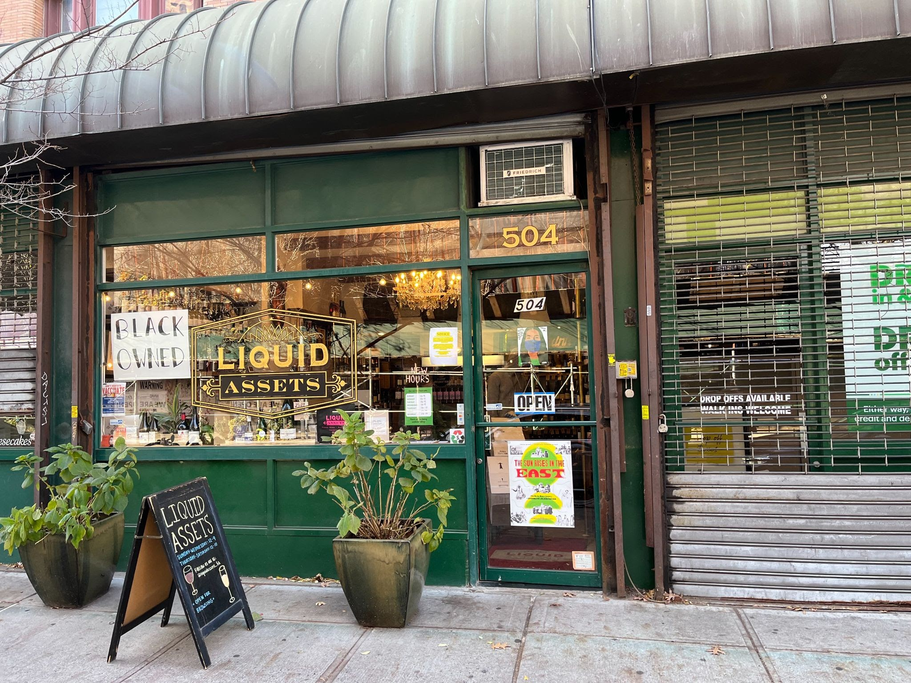
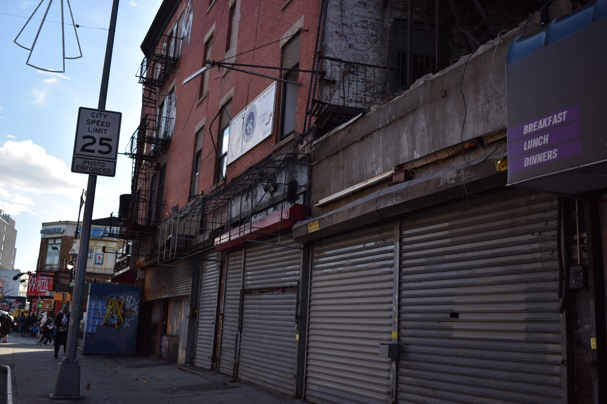
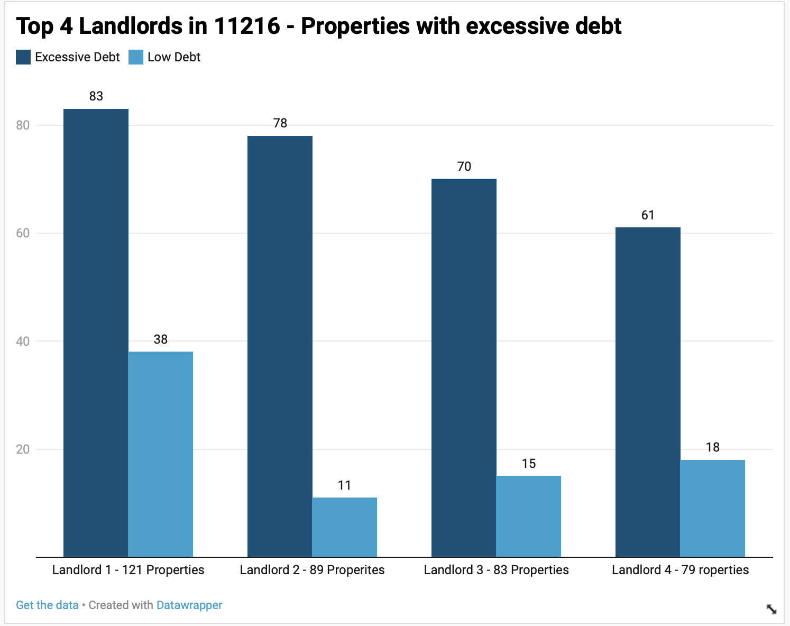
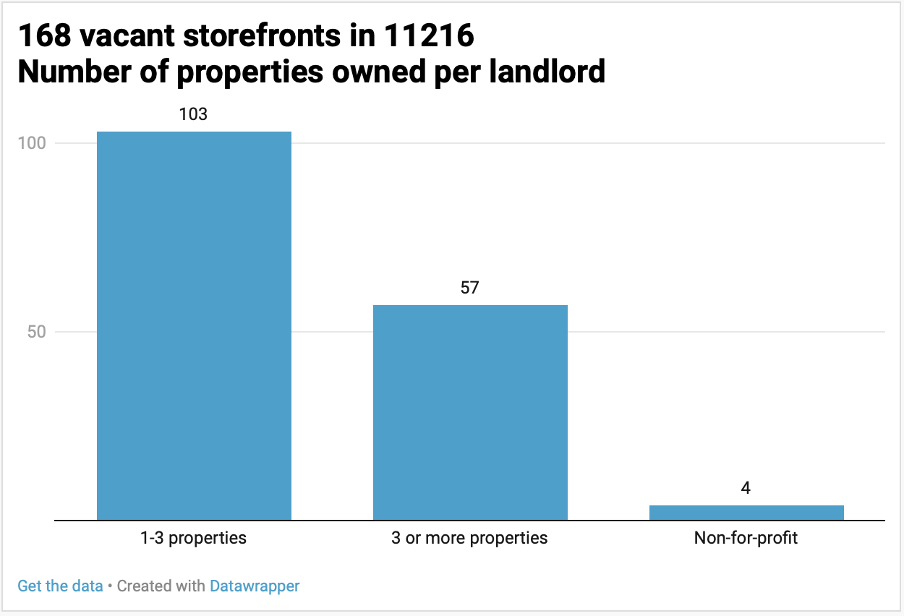
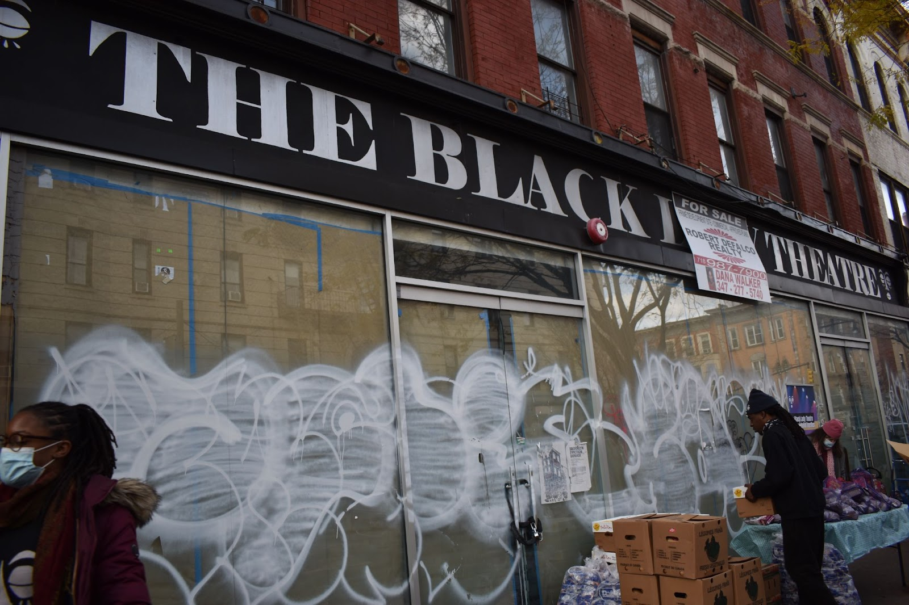

Small businesses along Nostrand avenue are finding it hard to stay on the block with landlords hiking rental payments, which also limits owners who can afford to occupy empty storefronts.
By Renee Onque, Zachary Smith, Juliet Jeske, Gabriel Poblete
Janessa Wilson, an employee at the boutique wine store Liquid Assets in the Brooklyn neighborhood of Bedford-Stuyvesant, has seen the neighborhood around her change over the course of the 23 years she’s been there. Most recently, a vacant storefront was purchased by a buyer from Los Angeles, who intends to turn the space into a bar.
In the last ten years, the location on Nostrand Avenue where Liquid Assets is located has been occupied by three different businesses. Locals in the community believe the last tenant, ŻABKA Coffee, closed down due to rent increases. Prior to that, it was True South Bookstore, a shop focused on Black history, cultural studies, and roots, and a part-time barbershop in recognition of the owner before them. South Bookstore in 2013 — also due to a dramatic rent increase .
“It was the classic ‘dropping knowledge in the neighborhood’ establishment,” Wilson said, one of the many members of the community who loved True South.
The rapid turnover of this Liquid Asset’s storefront is emblematic of what is happening on Nostrand Avenue, the main commercial street in this Brooklyn neighborhood. Storefronts have either changed renters multiple times or are empty. There are entire blocks of vacant lots with weathered metal gates that look like they haven’t been cleaned or opened in years. At the same time, Nostrand is seeing a new wave of businesses, several with large signs in the window declaring they are Black-owned.
Liquid Assets is a Black-owned wine store in Bed-Stuy. (Photo: Juliet Jetske)
Altogether, the street tells a complex story of businesses that have been squeezed out of the neighborhood as a result of increasing rents, while some modern businesses are finding success in an increasingly whiter neighborhood. In the Bed-Stuy zip code of 11216, the Caucasian population almost doubled between 2011 to 2019, while the Black community has shrunk by nearly 25%, according to the U.S. Census Bureau.
As a resident in the community, Wilson has witnessed ownership of businesses in the neighborhood changing from “small business owner to small business owner,” and shorter leases may be the cause.
Up until the 1990s, businesses were able to get 10-year leases and 20-year leases, according to Imani Henry, housing activist, BAN Gentrification. “Now they can't even get a five-year lease,” said Henry.
On nearby Fulton Street, nearly 20% of were vacant in 2017-2018, the New York City Department of Planning found in a 2019 report . The street is classified as a “hot retail corridor,” or a rapidly changing neighborhood where rents have increased or spaces have been kept vacant due to renters seeking high rents.
A 2020 follow-up report shows that inactive storefronts increased to nearly 25%.
A vacant block on Nostrand Avenue (Photo: Juliet Jetske)
One thing that may contribute to the high turnover of retail storefronts in the neighborhood are landlords who own multiple buildings carrying high levels of debt, according to an analysis with the real estate website, PropertyShark. We uncovered a pattern of landlords who owned numerous buildings with levels of debt higher than the purchase price of the building, which they try to make up with rising rents.
Samuel Stein, a housing policy analyst from the Community Service Society , describes how this allows landlords to get as much equity as possible out of their building. In the Community Service Society report from November 2020 “Corporate Windfalls or Social Housing Conversions? The looming mortgage crisis and the choices facing New York.” Stein and his colleagues describe this pattern as pulling equity where landlords purchase buildings then immediately take out new short-term interest-only mortgages. This gives the landlord instant cash but incentives the need to cut services and increase rents.
“The owner and the bank believe they’re making good business practices – or at least pulling in tremendous amounts of money. But it only works if tenants (commercial or residential) are able to pay ever-rising rents and if buyers will pay ever-higher prices for buildings in the city. What’s perhaps most noteworthy about this is that the landlords and their bankers still think those are safe assumptions,” said Stein.
For example, the landlord, listed in the following graph as landlord 2, owns the building where True South Bookstore was located and also owns an additional 14 properties in the Bedford-Stuyvesant zip code of 11216.
This chart shows the top four landlords who owned multiple properties in 11216. The number associated with each landlord is the total number of properties owned in New York City. All four landlords carry excessive debt on most of their properties.
The trend of landlords owning multiple properties was seen throughout the zip code. In the 168 vacant storefronts surveyed 34% of the buildings were owned by landlords who owned three or more buildings in New York City. The landlord who owned the most properties in 11216 owned 121 buildings.
Diarra, an employee at Soween Hair Salon on Nostrand who wanted to be referred to by her first name, has clients that were previous business owners in the neighborhood but could not afford their storefront rent increases and were forced to leave. She can recall one of her clients saying, “I’m leaving. I’m moving out,” after struggling to make payments.
Even when tenants do not want to move, they may be left with no choice. Sherese Parris, an artistic director at the Black Lady Theatre, remembers walking down the block in 2018 and seeing offer letters from a potential buyer on every storefront including the theater. Today, the closed theater is embroiled with its own real estate dispute over rights to the building.
Omar Hardy, the head of the Black Lady Theatre, left, and Sherese Parris, right (Photo: Juliet Jetske)
While older businesses are pushed out, new businesses that can afford the rent are moving in, changing the make-up of the block. For Karen Narefsky of The Association for Neighborhood & Housing Development, these landlords decide who rents its storefronts, and that’s not always small business owners from the neighborhood.“I think ultimately, the people who are buying and selling and owning property and making decisions about who gets to occupy it and who doesn't, are the ones who are driving the gentrification process,” said Narefsky.
There are recent pushes to protect retail owners from some of these practices. Council Member Helen Rosenthal sponsored a bill that would establish protections for tenants of storefront premises, similar to legislation previously sponsored by Council Member Stephen Levin. However, the legislation has been held in committee, facing significant resistance from the real estate sector. Legislation that was recently passed was Council Member Carlina Rivera’s “State of the Storefronts” which requires a comprehensive analysis of neighborhood commercial corridors every five years.
Staples in the community like True South Bookstore and The Black Lady Theatre have positively impacted the lives of Bed-Stuy residents for decades. Through programs like book signings with Black authors and food giveaways for people in need, these businesses have served their communities even amid turmoil.
To this day, every Tuesday, Parris, and other Black Lady Theatre staff hand out groceries from food banks in front of the theater. The group also hosts virtual and in-person events on topics like mental health although they can no longer use the Nostrand Avenue location.
“We've had people who literally told me that they were on the brink of suicide and they needed a space,” said Parris. “They came here and they were able to express themselves in their life.”